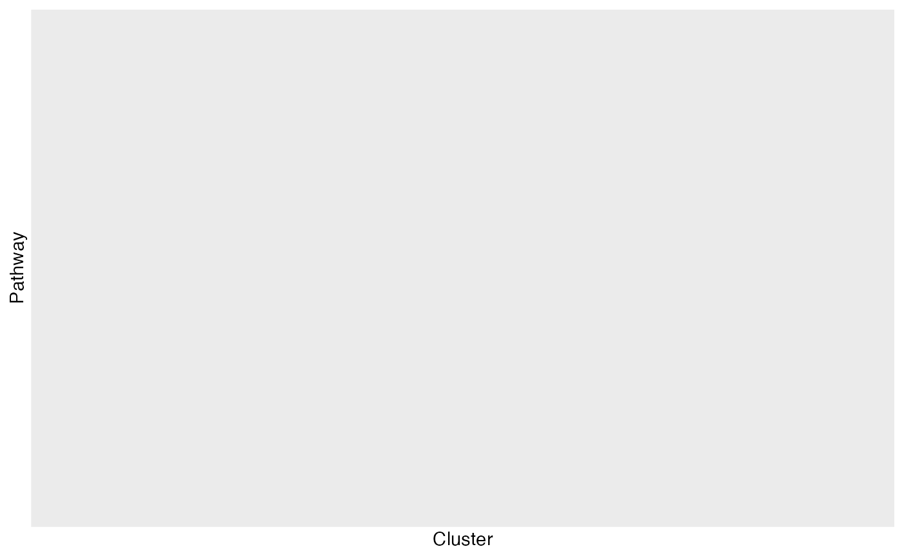

Perform Cluster Enrichment Analysis
clusterEnrich.RdclusterEnrich performs enrichment analysis on gene clusters, using Fisher's Exact Test to determine the significance of enrichment for each cluster.
Usage
clusterEnrich(
clusterTab,
se,
inputSet,
reference = NULL,
ptm = FALSE,
adj = "BH",
filterP = 0.05,
ifFDR = FALSE
)Arguments
- clusterTab
A
data framecontaining cluster information, where each row corresponds to a gene and its assigned cluster.- se
A
SummarizedExperimentobject containing gene expression data and metadata.- inputSet
A
listordata frameof gene sets to be used for enrichment analysis.- reference
A
charactervector of reference genes. If NULL, it will be extracted from se object. Default isNULL.- ptm
Logical. IfTRUE, the function will perform enrichment analysis on post-translational modification (PTM) gene sets. Default isFALSE.- adj
Character. The method for adjusting p-values. Default is "BH".- filterP
Numeric. The p-value threshold for filtering significant results. Default is 0.05.- ifFDR
Logical. IfTRUE, the function will use FDR-adjusted p-values for significance filtering. Default isFALSE.
Value
A list containing two elements:
`table`: A
data framewith enrichment results for each cluster and pathway.`plot`: A
ggplot2object showing the significance of enrichment for each pathway across clusters.
Details
The function first retrieves or computes the reference set of genes or PTM sites. It then performs enrichment analysis for each cluster using the runFisher function.
The results are filtered based on the p-value threshold and adjusted for multiple testing if ifFDR is TRUE. The function generates a dot plot where the size and color of the points represent the significance of enrichment.
Examples
# Load multiAssayExperiment object
data("dia_example")
# Get SummarizedExperiment object
se <- dia_example[["Phosphoproteome"]]
SummarizedExperiment::colData(se) <- SummarizedExperiment::colData(dia_example)
seProcess <- preprocessPhos(seData = se, normalize = TRUE, impute = "QRILC")
#> Imputing along margin 2 (samples/columns).
result <- addZeroTime(seProcess, condition = "treatment", treat = "EGF", zeroTreat = "1stCrtl", timeRange = c("20min","40min", "6h"))
# Get the numeric matrix
exprMat <- SummarizedExperiment::assay(result)
# Call the clustering function
clust <- clusterTS(x = exprMat, k = 3)
genesetPath <- appDir <- system.file("shiny-app/geneset", package = "SmartPhos")
inGMT <- piano::loadGSC(paste0(genesetPath,"/Cancer_Hallmark.gmt"),type="gmt")
# Call the function
clusterEnrich(clust$cluster, seProcess, inGMT)
#> $table
#> # A tibble: 0 × 9
#> # ℹ 9 variables: Name <chr>, Gene.number <int>, Set.size <int>, pval <dbl>,
#> # Genes <list>, padj <dbl>, cluster <chr>, ifSig <lgl>, atLeast1 <lgl>
#>
#> $plot

#>